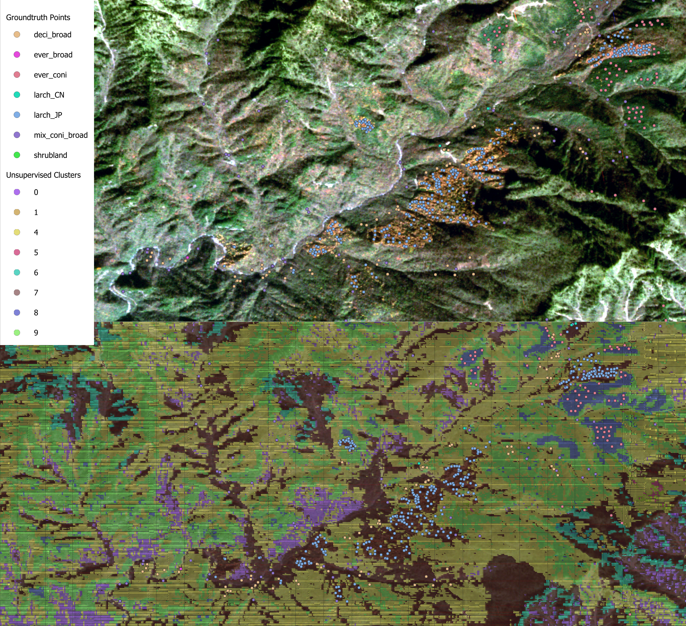
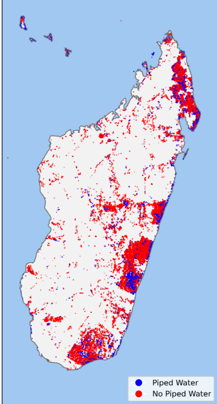
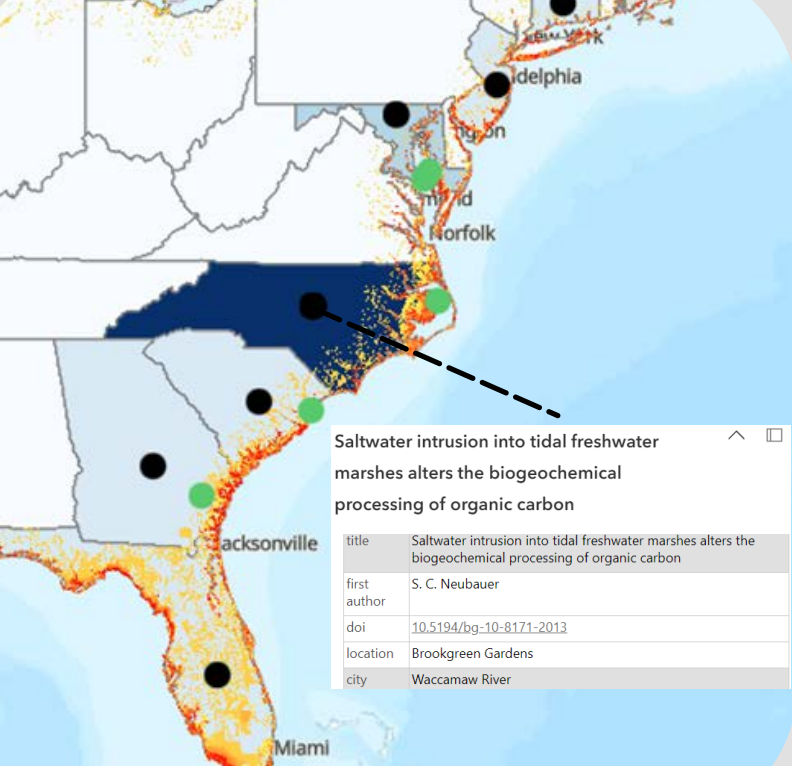

Dual LSTM Pipelines for Multi-Temporal Larch Plantation Mapping
Developed both supervised and self-supervised LSTM approaches to classify larch plantations
and other forest types in the mountainous Changqing region. This dual pipeline leverages 12 months
of Sentinel-2 imagery, encompassing spectral bands and key vegetation indices (NDVI, EVI, NDWI).
A supervised branch (bidirectional LSTM) achieved ~94.45% classification accuracy in well-sampled areas,
distinguishing Larix kaempferi (Japanese larch) and Larix gmelinii var. principis-rupprechtii (Chinese larch)
based on their distinct phenological cues. The parallel self-supervised autoencoder pipeline
discovered additional subtle clusters—highlighting important landscape heterogeneity
that extends beyond direct groundtruth data.
This project demonstrates how time-series deep learning methods can overcome challenging
data-scarce mountainous terrain, providing actionable insights for biodiversity conservation
and sustainable forestry management.
More details can be found in
the manuscript
and
the poster.

Tracking Progress Towards Sustainable Development Goal 6 Using Satellite Imagery
In this work, we assessed water access and sanitation infrastructure (i.e., piped water systems
and sewage networks) across African regions by combining Afrobarometer survey data with
large-scale satellite imagery (Landsat 8 and Sentinel-2). Through a self-supervised vision
transformer approach (DINO), the model inferred the presence of critical water infrastructure
based on subtle spectral and spatial cues in cloud-free monthly composites. By integrating
~46,000+ interview responses from Round 7 and Round 8 of Afrobarometer, the pipeline
achieved high classification accuracies (over 96% for piped water access, 97% for sewage system access).
This methodology can operate even in data-sparse conditions, using unlabeled satellite imagery
to learn robust feature representations. It provides a scalable and cost-effective means to
identify infrastructure coverage gaps, offering vital screening tools for policymakers
aiming to meet SDG 6 (clean water & sanitation).
Please see
this manuscript
and
this project group link
for more information.

SWISLR – Saltwater Intrusion & Sea Level Rise in Rural Landscapes
This project addresses the growing threat of saltwater intrusion in the U.S. coastal plain,
where sea-level rise, storms, and altered drainage networks drive salinity far inland. Our
study synthesizes ecological, geospatial, and socioeconomic data to track how saline
inundation reshapes farmland, timberlands, and freshwater wetlands. We documented major
environmental repercussions—forest dieback, lost crop yields, and diminishing drinking
water resources—as well as impacts on rural communities historically reliant on these
coastal landscapes.
By linking large geospatial datasets (e.g., ArcGIS-based hazard maps) with field surveys and
NSF-funded (DISES) research, we highlight hot spots of risk and identify local adaptation
strategies, such as selective drainage management or transitions to salt-tolerant crops.
Ultimately, the SWISLR project underscores the urgency of integrated planning to preserve
coastal livelihoods and ecosystems.
You can read more about it via
this NSF award,
this ArcGIS map,
and
a second map.
See also
this publication,
this Duke Big Data page,
and
this project poster.